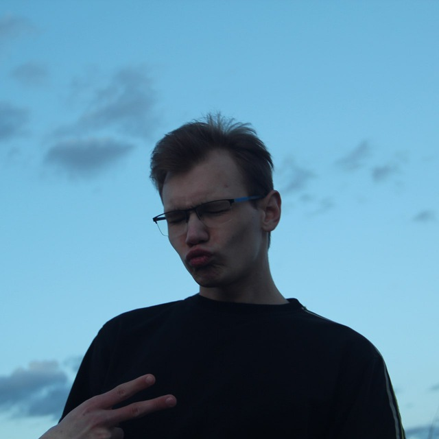

Моя група
305-ТН: ті хто продовжує боротьбу
Криворучко Юрій

Це я - автор цієї сторінки, Криворучко Юрій Володимирович. Людина, що практично нічого не чекала від універу й знала для чого вона туди йде, але навіть так він зміг мене здивувати...
Ще зі школи хотів стати розробником ігор й на даний момент є декілька проектів на itch.io. Також на моєму GitHub можливо знайти й інші проекти, які не пов'язані з GameDev сферою.
Курбала Максим

Курбала Максим - фанат та майбутній розрбник ШІ(Штучних Ідіотів).
Головний ворог в навчанні - непереборне бажання пройти новий тайтл від Кодзіми або новеньке DLC...
Але навіть це йому не заважає здавати сесії та залишатися на бюджеті XD.
Шкуро Олександра
Шкуро Олександра - одна з зірочок нашого колективу, хто розбавляє чоловічу атмосферу.
Катруша Денис

Катруша Денис - основний ідеолог майбутньої мови програмування - SaloScript.
Недооцінений геній, чудовий монтажер та VFX-майсетр. Ще й поліглот.
Студент групи 305-ТН Криворучко Ю.В.
Назад
Повернутися на головну